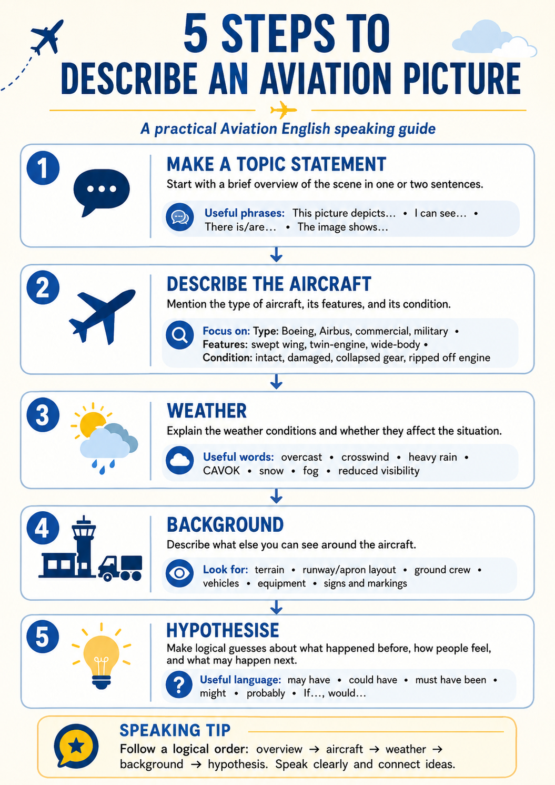

Picture Description: From Zero to ICAO Level 5
In the ICAO Speaking test you are shown an aviation photo and asked to describe it. This course takes you from zero to a Level 5 answer on one real accident photo: first the method, then a worked model answer, then a comprehension check, and finally your own timed practice.
The 5-Step Method
A reliable order for describing any aviation photo. Work through the five steps — read the idea, study the useful language, then see the example.

You now know the method. Let's see it applied to a real accident photo →
Worked Example — Runway Excursion into Water
A Boeing 737 that overran the runway and entered the water at Jacksonville. Below is a full ICAO Level 5 model answer, split by method step and by topic.

That is what a complete Level 5 answer sounds like. Now test your understanding →
Comprehension Quiz
Ten questions on the photo and the model answer. Pick an option to get instant feedback.
Your Turn
Describe the same photo yourself, out loud, against the clock. The model answer stays hidden until you choose to compare.